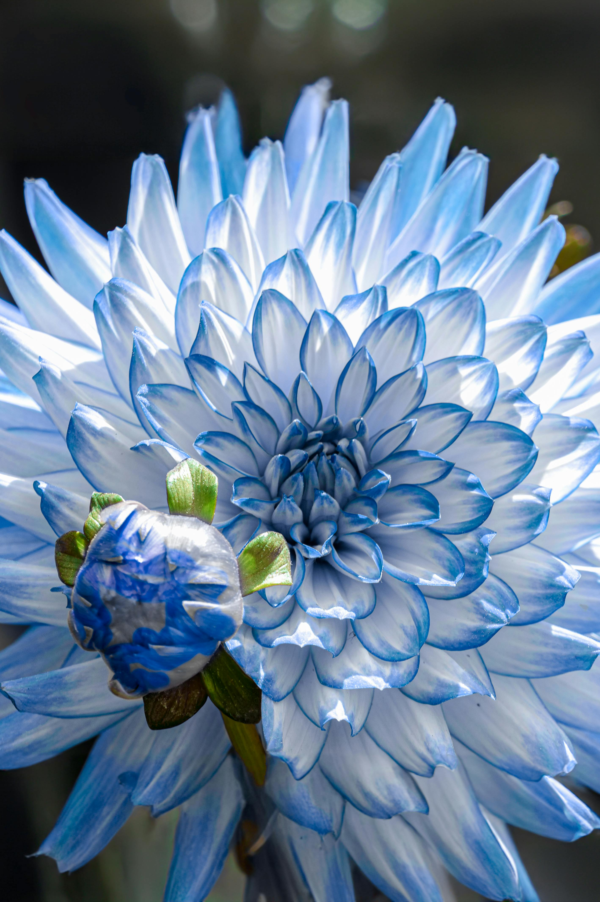
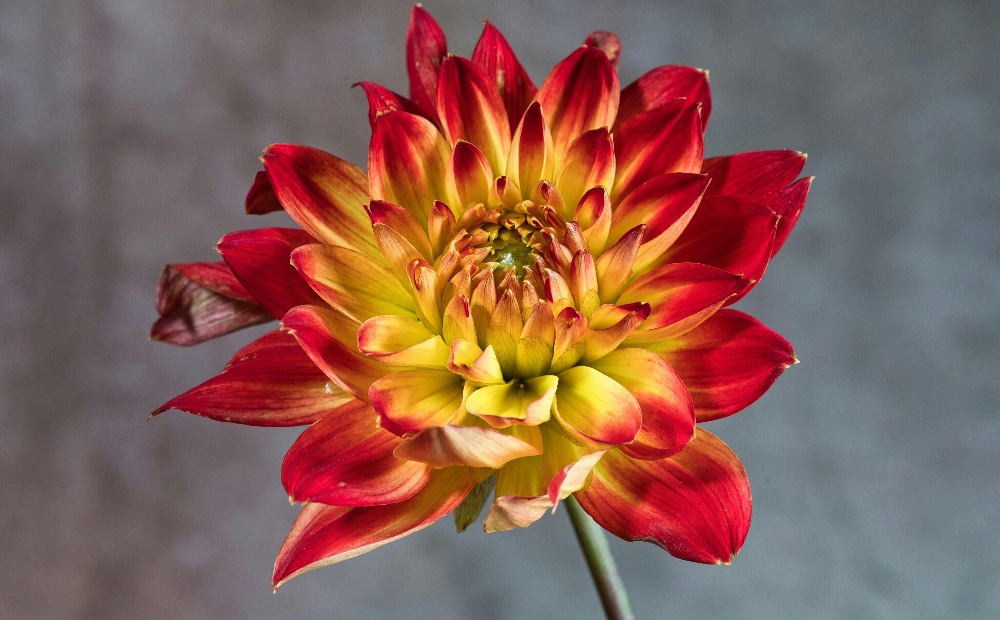

Mexico
National Flower — Dahlia
Bold, vibrant, and endlessly varied, the dahlia is a flower that captures the spirit of Mexico perfectly. Native to the highlands of Mexico, the dahlia has been treasured for centuries — first by the Aztecs, then by the world. Today it stands proudly as Mexico's national flower, a symbol of the country's rich culture, creativity, and natural beauty.


The Dahlia and Mexican Culture
Long before Spanish explorers arrived in the Americas, the Aztecs cultivated dahlias in the highlands of central Mexico. They used the flowers not just for decoration but also for practical purposes — the hollow stems were used as water pipes, and the tubers were eaten as food. The Aztec name for the dahlia was Acocoxochitl, meaning "water pipe flower." When Spanish botanists brought the dahlia back to Europe in the 18th century, it quickly became one of the most admired garden flowers in the world. Despite its global fame, the dahlia has never lost its deep connection to its Mexican homeland.
Why the Dahlia is Mexico's National Flower
In 1963, Mexico officially declared the dahlia its national flower in recognition of its origins and cultural importance. With over 40 wild species native to Mexico and more than 20,000 cultivated varieties worldwide, the dahlia represents Mexico's extraordinary natural diversity. Its bold colors and intricate geometric petals reflect the creativity and artistic spirit that runs deep in Mexican culture — from ancient Aztec art to the vivid murals of Diego Rivera. The dahlia reminds the world that Mexico is the birthplace of one of the most beautiful flowers on earth.
Quick Facts
| Feature | Details |
|---|---|
| Scientific Name | Dahlia pinnata |
| Common Colors | Red, pink, orange, purple, white, yellow |
| Blooming Season | Summer to fall (July – October) |
| Symbol of | Strength, creativity, diversity |
| Declared National Flower | 1963 |
How to Care for a Dahlia
- Plant tubers in spring after the last frost in well-drained, fertile soil
- Choose a sunny spot with at least 6–8 hours of direct sunlight daily
- Water regularly but avoid overwatering — dahlias dislike soggy soil
- Pinch out the growing tip when the plant reaches 40cm to encourage bushier growth
- Stake taller varieties to prevent them from falling over in wind
- Dig up tubers in autumn before the first frost and store in a cool, dry place over winter
Watch a Dahlia Bloom
Watch the incredible geometric petals of a dahlia slowly unfold in this mesmerizing time-lapse:
▶ Watch: Blooming Dahlia Flowers Timelapse — ItalyPaul